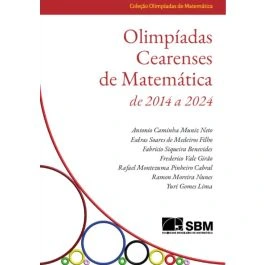
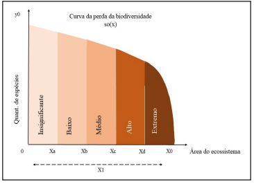
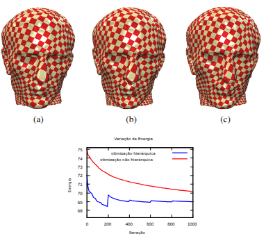
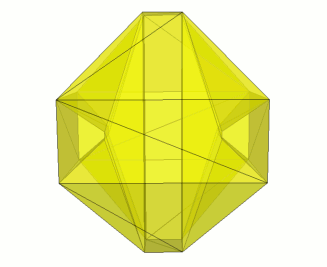
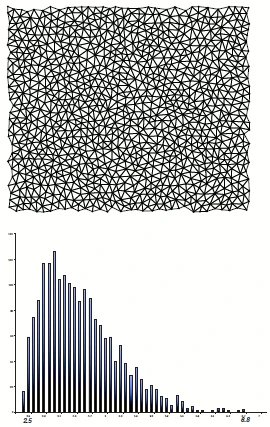
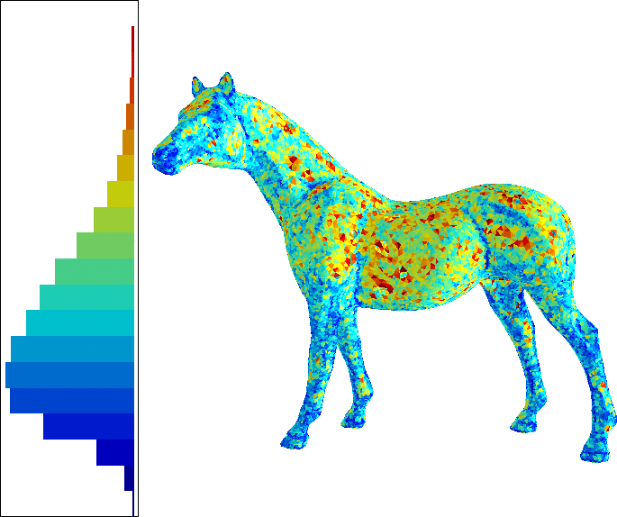
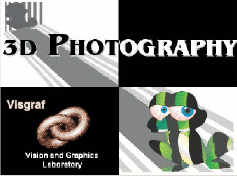
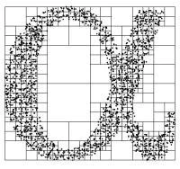
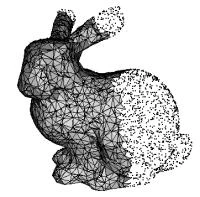
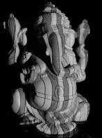

Geometry & topology
Surface representations, topological mesh operators, and the mathematical foundations of geometric modeling.
I am a faculty member at the Federal University of Ceará (UFC), Brazil, and a postdoctoral researcher at NYU Tandon School of Engineering, working with Prof. Claudio Silva.
I received my BSc in Computer Science from UFC in 2000, followed by my MSc (2003) and DSc (2009) in Applied Mathematics at IMPA / VISGRAF. Both graduate degrees were supervised by Luiz Velho, with Hélio Lopes as my doctoral co-advisor. I also conducted postdoctoral research at NYU with Claudio Silva in 2012–2013.
My research spans geometric modeling, computational topology, geometry processing, sampling theory, discrete differential geometry, and 3D photography, as well as AI for mathematical reasoning.

This closed polyhedral surface has two handles and negative discrete Gaussian curvature at every vertex. Constructed by Barros, Medeiros, and Silva, it shows that the smooth-surface theorem guaranteeing a point of positive Gaussian curvature does not extend to polyhedra. See Two Counterexamples of Global Differential Geometry for Polyhedra (PDF) for details.
Postdoctoral Researcher
NYU Tandon School of Engineering
Faculty Member
Federal University of Ceará · Brazil
01 / Research interests
Mathematical foundations and computational methods for representing, understanding, and reasoning.
Surface representations, topological mesh operators, and the mathematical foundations of geometric modeling.
Blue noise sampling, surface reconstruction, and structured light methods that connect digital geometry to the physical world.
Tools for comparing and interpreting AI-generated mathematical proofs, with a focus on their argument structure.
02 / Publications
NeurIPS Workshop on AI for Verifiable Coding (VeriCodeGen) · Workshop paper
Mathematical understanding depends on the route from hypotheses to conclusion: how the parts of a proof function and which dependencies carry the argument forward. This structure can persist when wording or notation changes, while a small alteration to a hypothesis or inference can produce a different argument beneath similar prose. Formal verification can establish that a rewrite proves the same theorem, but not whether it follows the same mathematical route. Comparing informal proofs, especially those produced or revised by generative models, therefore requires reconstructing which claims, dependencies, and reasoning steps are preserved, reorganized, or replaced. We present ProofDiff, a system for comparing informal mathematical documents. It is designed to support human review, not to certify mathematical correctness. Given two documents, ProofDiff independently constructs a source-grounded argument map for each and proposes correspondences between the resulting maps. Each map captures the document's claims and reasoning steps and records the typed relations that connect them. An integrated human-review layer allows reviewers to revise the maps and correspondences while preserving an auditable history. Comparing the two argument maps provides a basis for inspecting whether the documents follow the same mathematical route and where their claims or dependencies differ. We demonstrate ProofDiff on four illustrative pairs of AI-generated proofs, ranging from a detailed proof and its concise revision to proofs using different mathematical strategies.

Sociedade Brasileira de Matemática (SBM) · Coleção Olimpíadas de Matemática · Book in Portuguese
The Ceará Mathematics Olympiad (OCM) is one of the oldest mathematics competitions in Brazil, reaching its 44th edition in 2025. This book brings together the problem statements, solutions, and lists of prize winners from 2014 to 2024, the period during which the authors have led the competition. The OCM was the initial driving force behind Ceará’s prominent role in national and international mathematics competitions. By working through the problems collected in this volume, readers will understand why.

Ciência Florestal · 31(4), 1885–1909
The biodiversity of the Atlantic Forest is considered to be of exceptional biological importance, but its rich flora and fauna are threatened by deforestation. This study presents a model for assessing biodiversity loss, using the municipality of Viçosa do Ceará, in northeastern Brazil, as a case study. The method proposes an indicator to estimate biodiversity loss from the decline in the species richness of birds, mammals, and squamate reptiles in this habitat, based on the species–area relationship model. The results show that: (1) biodiversity loss in the study area is at an “extreme” level; (2) the average rates of change and the rate of biodiversity loss accelerate, so the greater the increase in deforested area, the faster the rate and acceleration of biodiversity loss; and (3) the curvature of the function indicates that biodiversity loss reaches a critical point when deforestation affects 93% of the ecosystem’s area. We conclude that the model for estimating losses of birds, mammals, and squamate reptiles proved effective in assessing biodiversity loss in the Atlantic Forest ecosystem.
arXiv · Preprint
In this paper, we apply the Logistic PCA (LPCA) as a dimensionality reduction tool for visualizing patterns and characterizing the relevance of mathematics abilities from a given population measured by a large-scale assessment. We establish an equivalence of parameters between LPCA, Inner Product Representation (IPR) and the two paramenter logistic model (2PL) from the Item Response Theory (IRT). This equivalence provides three complemetary ways of looking at data that assists professionals in education to perform in-context interpretations. Particularly, we analyse the data collected from SPAECE, a large-scale assessment in Mathematics that has been applied yearly in the public educational system of the state of Ceará, Brazil. As the main result, we show that the the poor performance of examinees in the end of middle school is primarily caused by their disabilities in number sense.

SIBGRAPI · Workshop of Work in Progress
Best Work Award · SIBGRAPI WIP 2019 ↗
Triangulated surfaces can be parameterized hierarchically, allowing a surface and its parametric domain to be represented at multiple levels of detail and thus providing greater control over the parameterization. In this paper, we present a hierarchical structure for triangulated surfaces with disk topology, constructed using a constrained Delaunay triangulation. This construction avoids potential inconsistencies in topology or face orientation introduced into the triangulation by the simplification process. In addition, we use an optimization process within the hierarchy to reduce the distortions caused by the parameterization.

IEEE Transactions on Visualization and Computer Graphics · 24(6), 1983–1996
Presented at SGP 2017 · Symposium on Geometry Processing ↗
We introduce the Hierarchical Poisson Disk Sampling Multi-Triangulation (HPDS-MT) of surfaces, a novel structure that combines the power of multi-triangulation (MT) with the benefits of Hierarchical Poisson Disk Sampling (HPDS). MT is a general framework for representing surfaces through variable resolution triangle meshes, while HPDS is a well-spaced random distribution with blue noise characteristics. The distinguishing feature of the HPDS-MT is its ability to extract adaptive meshes whose triangles are guaranteed to have good shape quality. The key idea behind the HPDS-MT is a preprocessed hierarchy of points, which is used in the construction of a MT via incremental simplification. In addition to proving theoretical properties on the shape quality of the triangle meshes extracted by the HPDS-MT, we provide an implementation that computes the HPDS-MT with high accuracy. Our results confirm the theoretical guarantees and outperform similar methods. We also prove that the Hausdorff distance between the original surface and any (extracted) adaptive mesh is bounded by the sampling distribution of the radii of Poisson-disks over the surface. Finally, we illustrate the advantages of the HPDS-MT in some typical problems of geometry processing.

Computer Graphics Forum · 33(7), 71–80 · Pacific Graphics
Structured light scanning is ubiquituous in 3D acquisition. It is capable of capturing high geometric detail at a low cost under a variety of challenging scene conditions. Recent methods have demonstrated robustness in the presence of artifacts due to global illumination, such as inter-reflections and sub-surface scattering, as well as imperfections caused by projector defocus. For comparing approaches, however, the quantitative evaluation of structured lighting schemes is hindered by the challenges in obtaining ground truth data, resulting in a poor understanding for these methods across a wide range of shapes, materials, and lighting configurations. In this paper, we present a benchmark to study the performance of structured lighting algorithms in the presence of errors caused due to the above properties of the scene. In order to do this, we construct a synthetic structured lighting scanner that uses advanced physically based rendering techniques to simulate the point cloud acquisition process. We show that, under conditions similar to that of a real scanner, our synthetic scanner replicates the same artifacts found in the output of a real scanner. Using this synthetic scanner, we perform a quantitative evaluation of four different structured lighting techniques – gray-code patterns, micro-phase shifting, ensemble codes, and unstructured light scanning. The evaluation, performed on a variety of scenes,demonstrate that no one method is capable of adequately handling all sources of error – each method is appropriate for addressing distinct sources of error.

Graphical Models · 76(1), 17–29
This paper proposes a novel method for the computation of hierarchical Poisson disk samplings on polygonal surfaces. The algorithm generates a pointerless hierarchical structure such that each level is a uniform Poisson disk sampling and a subset of the next level. As the main result, given a dynamically-varying importance sampling function defined over a surface, the hierarchy is capable of generating adaptive samplings with blue noise characteristics, temporal-coherence and real-time computation. Classical algorithms produce hierarchies in tight ratios, which is a serious bottleneck specially for a large number of samples. Instead, our method uses sparse ratios and decreases the adaptation error of the hierarchy through a fast optimization process. Therefore, we save a considerable amount of time (up to 74% in our experiments) while preserving the good blue noise properties. We present applications on Non Photo Realistic rendering (NPR), more specifically, on surface stippling effects. First, we apply our method by taking illumination to be the importance sampling to shade the surface, and second, we dynamically deform a surface with a predefined stippled texture.

JP Journal of Geometry and Topology · 11(1), 65–76
In this article we show, by giving counterexamples, that two classical results of global differential geometry are not valid for polyhedral surfaces. Considering the set of compact smooth surfaces we exhibit counterexamples concerning the Cohn-Vossen theorem and the existence of elliptical points. The key point on the construction of such polyhedral surfaces is the application of a nice discrete version of the Gaussian curvature.

Computer Aided Geometric Design · 27(1), 1–22
In this paper we introduce an unified framework for topological manipulation on triangulated 2-manifolds with or without boundary. We show that there are two kinds of primitive operators on the underlying meshes: operators that change the topological characteristic of the mesh and operators that just modify its combinatorial structure. We present such operators and demonstrate that they provide a complete and coherent set of elementary operations for mesh construction and editing.

International Journal of Shape Modeling · 15(1–2), 77–91
This paper studies triangulations obtained from Poisson disc sampling. The Poisson disc sampling strategy with radius parameter α can be used to obtain a set of points in the interior or on the boundary of a given solid object in the plane. Using this sampling, one can construct a triangulation from its α-complex. In this work we give two contributions: the quality of this triangulation in terms of triangles aspect ratio and a sampling condition with topological guarantee. If we choose the same parameter alpha for the Poisson disc sampling and for the solid alpha-complex, we prove that all the triangles in the complex have aspect ratio less or equal than 4√3, which is only three times the aspect ratio of an equilateral triangle. Moreover, we prove that this bound is tight. We also establish a condition on radius parameter α that allows to recover, with topological guarantees, the original solid object from the α-complex representation.

Computer Graphics Forum · 25(4), 685–695
SIBGRAPI 2005 Best Papers Award · conference version ↗
Performances of actual mesh compression algorithms vary significantly depending on the type of model it encodes. These methods rely on prior assumptions on the mesh to be efficient, such as regular connectivity, simple topology and similarity between its elements. However, these priors are implicit in usual schemes, harming their suitability for specific models. In particular, connectivity–driven schemes are difficult to generalise to higher dimensions and to handle topological singularities. GEncode is a new single–rate, geometry–driven compression scheme where prior knowledge of the mesh is plugged into the coder in an explicit manner. It encodes meshes of arbitrary dimension without topological restrictions, but can incorporate topological properties, such as manifoldness, to improve the compression ratio. Prior knowledge of the geometry is taken as an input of the algorithm, represented by a function of the local geometry. This suits particularly well for scanned and remeshed models, where exact geometric priors are available. Compression results surfaces and volumes are competitive with existing schemes.

SIBGRAPI · Natal, Brazil
Best Papers Award · SIBGRAPI 2005 ↗
Among the mesh compression algorithms, different schemes compress better specific categories of model. In particular, geometry–driven approaches have shown outstanding performances on isosurfaces. It would be expected these algorithm to also encode well meshes reconstructed from the geometry, or optimized by a geometric re–meshing. GEncode is a new single–rate compression scheme that compresses the connectivity of these meshes at almost zero–cost. It improves existing geometry–driven schemes for general meshes on both geometry and connectivity compression. This scheme extends naturally to meshes of arbitrary dimensions in arbitrary ambient space, and deals gracefully with non–manifold meshes. Compression results for surfaces are competitive with existing schemes.

25º Colóquio Brasileiro de Matemática · IMPA · Book in Portuguese
This book grew out of a series of activities in image-based modeling carried out at IMPA’s VISGRAF Laboratory since 2001. These activities include courses, lectures, research projects, and master’s and doctoral theses. Together, they form a comprehensive line of research that became one of the main interests of the course organizers, Luiz Velho and Paulo Cezar Carvalho. For this reason, we invited our collaborators in this research—Asla Sá, Esdras Soares, Anselmo Antunes Montenegro, Luiz Rivera, and Adelailson Peixoto—to write the course notes. All of them explored related topics in their master’s or doctoral theses.
The book introduces a recent area of computer graphics research known as 3D Photography. This field brings together methods for reconstructing three-dimensional objects from images. The book provides an overview of the 3D photography process, including camera calibration, the acquisition of geometric and photometric information, and model processing.

SIBGRAPI · Curitiba, Brazil
In this article we propose a new 2D triangulation method based on the ball-pivoting algorithm (BPA). The BPA is an interesting advancing front approach for surface reconstruction that uses a ball of fixed radius traversing the 3D sample points by pivoting front edges and attaching triangles to the mesh. Given a set of 2D points, our method applies the BPA on them assuming that they have a constant third coordinate. We show that such geometrical restriction implies in several simplifications on the original BPA implementation. We demonstrate that the resulted triangulation is a solid alpha complex, a special subset of Delaunay Triangulations that is closely related to alpha shapes. The BPA efficency is extremely dependent on the uniformity of the sampling and on the ball radius. We also present an efficient generalization of our method to obtain, in an adaptive way, 2D solid alpha complexes of generic samplings (uniform or non-uniform) free from the influence of ball size.

SIBGRAPI · São Carlos, Brazil
In this paper we study advancing front methods for surface reconstruction. We propose a topological framework based on handlebody theory to implement such methods in a simple and robust way. As an example of the application of this framework we show an implementation of the Ball-Pivoting Algorithm.

RITA — Revista de Informática Teórica e Aplicada
This survey describes the methodology of coding structured light for recovering depth information of scenes and outlines the main approaches used in the area. A new taxonomy of the methods is proposed and the trends in recent work are presented and discused.
03 / Projects & software
Research tools, source code, and experiments to explore and build upon.
A synthetic scanner built with physically based rendering to evaluate structured light methods under challenging scene conditions.
Hierarchical Poisson disk sampling on polygonal surfaces, with adaptive distributions and applications to surface stippling.
A C++ library for constructing and editing triangulated 2-manifolds.
Auditable comparisons of the argument structure in AI-generated proofs.
04 / Background
My work connects the mathematics of shape with the algorithms that make it useful.
I am a faculty member at the Federal University of Ceará (UFC), Brazil, and a postdoctoral researcher at NYU Tandon School of Engineering, working with Prof. Claudio Silva.
I received my MSc and DSc in Applied Mathematics at IMPA / VISGRAF, under the supervision of Luiz Velho, with Hélio Lopes as my doctoral co-advisor. My research spans geometric modeling, computational topology, sampling theory, discrete differential geometry, and 3D photography.